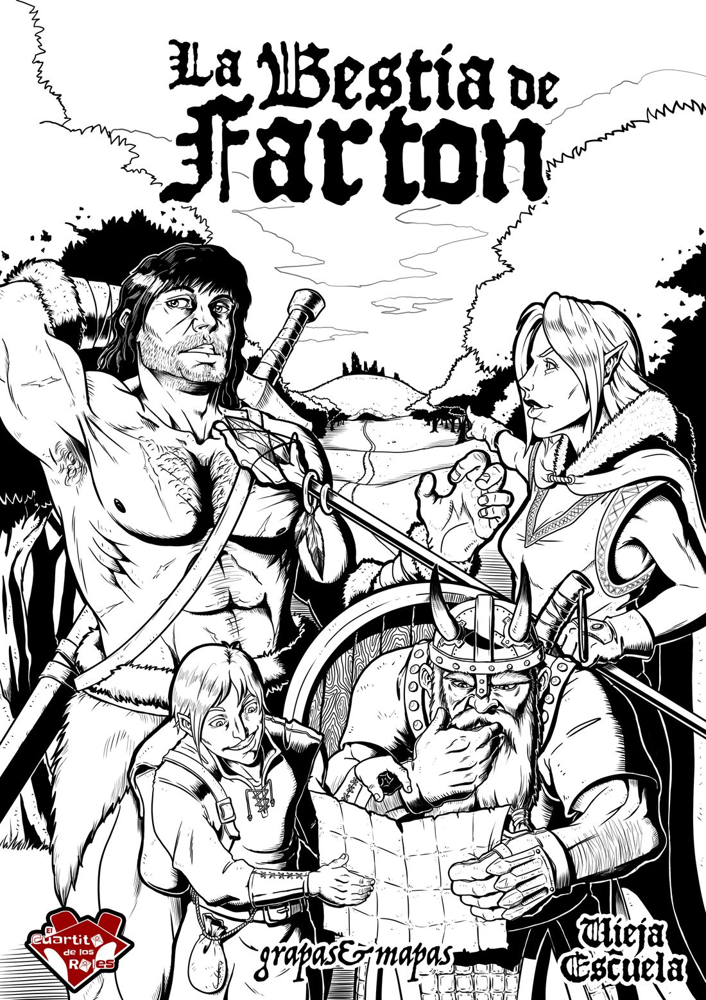
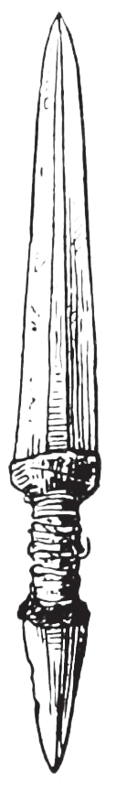
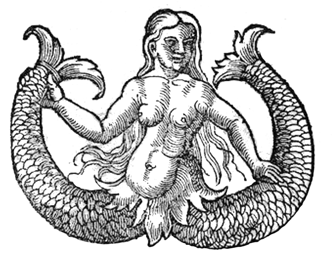

Cuaderno del máster · Vieja Escuela: el juego de rol

Ilustración de portada de Endyamar para la edición original de grapas&mapas.
Un pueblo harto, un ogro con mucha hambre y un bosque que nadie cruza entero desde hace años. El trabajo parece sencillo: ir, matar a la bestia y volver con su cabeza. Lo difícil es llegar, porque hay que elegir por dónde, y debajo de la colina hay algo que ni el propio ogro sabe que existe.
Este cuaderno adapta para dirigirla la aventura de iniciación de Iñaki Raya publicada por grapas&mapas. Ordena el material, unifica las dificultades con las del manual, corrige lo que no cuadra y añade lo que le falta a quien la dirige por primera vez: escenas, voces, ejemplos de mesa y una hoja de control. Lo que no está en la aventura original va marcado propuesta, y al final hay una lista de erratas y aclaraciones.
Vieja Escuela: el juego de rol, edición revisada. De tres a cinco aventureros de Nivel 3 (hay cuatro pregenerados). Una sesión de tres o cuatro horas. Exploración, malas decisiones y un ogro.
Descargar el cuaderno en PDF (A4), listo para imprimir. También está la versión para imprimir desde el navegador, y lo que se enseña a los jugadores en su propia página.
Son un grupo de aventureros contratado por Farton, un pueblo junto al Bosque del Ogro. La criatura lleva demasiados años saliendo a saquear cuando tiene hambre. Hay que entrar en el bosque y acabar con ella. Quien lleve su cabeza al pueblo cobra. La partida empieza con el trato cerrado, en la tienda del pueblo, comprando lo que van a necesitar.
El pueblo ha juntado lo que ha podido, y os lo ha contado tres veces para que quede claro lo que le cuesta. Ahora estáis en la tienda de Podrik, entre rollos de cuerda y ristras de ajos. Fuera, alguien ha dejado de hablar para miraros por la ventana. Podrik pone las dos manos en el mostrador. «Bueno. ¿Qué se llevan los valientes?»
El ogro es lo de menos. Vive en una cueva de la colina y es un problema que se resuelve a golpes. Lo interesante es que esa cueva no es una cueva: es el acceso disfrazado a los sótanos de una torre derrumbada, cuyas ruinas coronan la colina. El ogro la ha ido agrandando a zarpazos y nunca ha reparado en la puerta secreta del fondo.
Abajo hay dos cosas: ratas gigantes en las salas de arriba, y en las de abajo un cubo gelatinoso que lleva años limpiando. Se ha comido un cofre, pero no lo que había dentro: una daga mágica y un amuleto.
Por la puerta: la cueva, con el ogro dentro o a punto de volver. Es lo que hará casi todo el mundo.
Por el tejado: la trampilla de las ruinas, enterrada bajo los cascotes. Da a las salas de las ratas, y bajando se llega al cubo y a la puerta secreta, que se abre a la espalda del ogro.
Es una aventura de elegir. No hay trama que seguir ni escena que tenga que ocurrir: hay un mapa, un objetivo y gente que da información a medias, en parte falsa. Tu trabajo es describir, escuchar qué intentan y contestar con honradez, sin salvarlos ni castigarlos. Si se meten en el lago después de leer el cartel, es culpa suya, y se acordarán durante años.
El mapa es de Iñaki Raya. A los jugadores enséñales el que dibuja Podrik, sin las arañas, sin el claro y sin los vados: lo tienen en la sinopsis. Tiene una trampa geográfica que conviene entender antes de empezar: la colina está al otro lado del agua. El río baja de norte a sur y en el lago se le une un brazo que viene del este, así que al noreste solo se llega mojándose o por el vado norte, y ese vado sale del Bosque de las Arañas.
| Ruta | Por dónde | Qué cuesta | Tiempo |
|---|---|---|---|
| El oeste | Farton, cabaña de los leñadores, Bosque de las Arañas, vado norte, colina. | Telarañas y veneno. A cambio, se cruza sin nadar, y aquí está Pip. Hay que encontrar el vado (Supervivencia 14+) o que Pip lo enseñe. | 2 jornadas |
| El lago | Farton, cabaña o ruinas del puerto, orilla, lago, colina. | Algas. Es lo más corto y lo peor. Si llevan barca, no pasa nada hasta que algo se les enreda en el remo propuesta. | 1 jornada y media |
| El este | Farton, posada, puente, bosque del claro, brazo del río a nado, colina. | El claro está de camino, y hay que nadar el brazo: dos éxitos de FUE 14+. Lobos todo el rato. | 2 jornadas |
La aventura solo dice que el claro está a una jornada de Farton. Todo lo demás se ha medido a partir de ahí; una jornada son unas ocho horas de marcha por camino o sendero.
| De… | a… | Tiempo | Notas |
|---|---|---|---|
| Farton | Posada de Farton | ¼ | Buen camino. |
| Farton | Cabaña de los leñadores | ½ | Sendero de carros. |
| Posada | Ruinas del puerto | ¼ | Por la orilla. |
| Posada | Claro de la Piedra | ¾ | Puente y bosque, sin senda. Con Farton, una jornada exacta. |
| Cabaña | Linde de las arañas | ¼ | Se acaba lo talado. |
| Linde | Vado norte | ½ | Por dentro del bosque de arañas. |
| Linde | Vado sur | ¼ | Por la orilla. Cruza al bosque del claro, no a la colina. |
| Vado norte | Colina | ½ | Bosque cerrado, territorio de lobos. |
| Claro | Brazo del río | ¼ | — |
| Brazo del río | Colina | ½ | — |
| Lugar | Quién | Qué se saca |
|---|---|---|
| Tienda de Podrik | Podrik | Equipo y rumores, unos verdaderos y otros no. |
| Posada de Farton | Nan propuesta | Una cama, una historia y el camino al puente. |
| Ruinas del puerto | El viento | Un susto falso y el lugar para acampar. |
| Cabaña de los leñadores | Nadie | Leña, mantas y una noche segura. |
| Claro de la Piedra | Las voces | El destino de los dioses: bueno o malo, para siempre. |
| El lago | Las algas | Un cartel que avisa y un fondo lleno de esqueletos. |
| Bosque de las Arañas | Arañas, Pip | Un guía, una poción y los vados. |
| Colina del Ogro | La Bestia | La cabeza y su saco de monedas. |
| Subterráneos | Ratas, cubo | Piedra de afilar, poción, daga y amuleto. |
El pueblo, la mañana de la partida. Unos veinte minutos de juego.
Se ve un pueblo de casas bajas entre campos de labor, con las cercas remendadas una y otra vez y un corral vacío del que nadie habla. Huele a humo de leña, a cebolla y a estiércol. Se oye poco: un perro, un martillo, y la conversación que se apaga cuando entráis.
La aventura empieza con el trabajo aceptado. No hace falta jugar la negociación: empieza en la tienda, que es donde los jugadores compran, preguntan y se oyen hablar en personaje por primera vez. Lee el texto de «Lo que saben los jugadores» y deja que hablen.
Cómo se le ve. Cincuenta y tantos, delantal de cuero, dedos gordos que manejan con cuidado una balanza diminuta. Le falta el lóbulo de una oreja y no piensa explicar por qué propuesta.
Cómo habla. Todo lo convierte en una venta, y es generoso con los consejos porque le salen gratis. Dice «valientes» a los clientes, con un poco de guasa. Antes de decir algo serio se limpia las manos en el delantal.
Lo que quiere. Que vuelvan, porque les ha fiado y porque es su pueblo. Ha visto salir a otros. Se acuerda de lo que compraron.
«Cuerda. Lleven cuerda. El último grupo no llevó, y mire.»
«¿Antorchas? Tres por una moneda de cobre… bueno, una por una de cobre, pero se las dejo a precio de amigo si vuelven a por más.»
«Yo no he estado allí, ¿eh? Yo vendo. Lo que le cuento es lo que me cuentan los que vuelven. Que son menos de los que salen.»
Podrik suelta uno gratis con la primera compra. Cada pregunta bien hecha da derecho a una prueba de Comunicación 11+ para otro más; si fallan, se encoge de hombros y les enseña unas botas propuesta. Tira 1d10 o, si quieres, elige el que mejor le venga a la ruta que estén mirando.
| 1d10 | Lo que dice Podrik | La verdad |
|---|---|---|
| 1-2 | «Al este está el embarcadero viejo, de piedra. Aquello se usaba para el comercio, hasta que llegó el ogro y dejaron de venir los botes. Por las noches se oye al viejo Max, que trabajaba allí y se murió de hambre al quedarse sin faena. Yo lo he oído, ¿eh?» | Falso. Es el viento entre las ruinas. |
| 3-4 | «Hay arañas. Grandes como este mostrador. Si ven telas, den la vuelta y busquen otro camino. La de cazadores y leñadores que han entrado por allí y no han salido…» | Verdadero. |
| 5-6 | «Si les pilla la noche, al suroeste del bosque está la cabaña de los leñadores. Siempre hay leña y mantas: es la costumbre, el que usa repone.» | Verdadero. |
| 7-8 | «Al lago ni acercarse. El agua se come al que se mete. Hay un cartel, ya lo verán: que no es buena idea molestar al agua.» | Verdadero en parte. Lo que se come a la gente son las algas carnívoras del fondo. |
| 9-10 | «Hay una piedra rara en un claro, al otro lado del río, hacia el sureste. Los bichos no se acercan. Sitio encantado. Mi cuñado fue y volvió… distinto. Ni se les ocurra.» | Verdadero. Y aun así, irán. |
| Si preguntan… | Podrik contesta |
|---|---|
| ¿Cómo es el ogro? | «Tres de mí, a lo alto. Lleva un tronco por porra. Baja cuando tiene hambre y se lleva lo que encuentra: la vaca, la puerta, la despensa entera. Cuando se le oye ya es tarde.» |
| ¿Dónde vive? | «En la colina, al noreste, más allá del río. Se la huele antes de verla.» |
| ¿Cómo se cruza el río? | «Hay un puente abajo, junto a la posada, pero lleva a la otra orilla, no a la colina. Vados dicen que hay. Yo nunca los he visto.» |
| ¿Hay lobos? | «Sí, y este invierno ha sido malo. Con fuego no los espanta usted, no con esa hambre.» |
| ¿Quién era el del corral vacío? | «Los Marsal. Se han ido con la hija a la ciudad. Bueno, lo que quedó.» propuesta |
| ¿Y el dinero? | «Cuando traigan la cabeza. Sin cabeza, ni un cobre. Aquí ya nos han engañado.» |
Todo lo del equipo diverso del manual, a su precio. Armas y armaduras, las sencillas: nada de mallas ni de placas, que en Farton no hay quien las haga. Agua sagrada y símbolos de plata, tampoco, salvo que quieras jugar con ello. Los pregenerados llevan 40 mo cada uno, adelanto del pueblo propuesta; la lista de precios está en la sinopsis para que la consulten mientras hablan.
Al terminar, pon el mapa en la mesa y pregunta por dónde van. Que lo discutan. Si salen sin decidirlo, volverán a Farton a medio camino: cuanto más claro lo tengan aquí, mejor irá el resto de la sesión.
La aventura apenas las menciona. No hacen falta, pero son el sitio donde los jugadores recuperan PV y conversan, y el contraste hace mejor lo que viene después. Todo esto es propuesta, salvo lo de la leña y las mantas de la cabaña y el viento de las ruinas.
Junto al puente, en el camino que sale hacia el este. Nan, la posadera, tiene pensión a precio del manual y una opinión sobre todo. Sigue abierta porque es tozuda y porque el ogro, dice, «no sabe cruzar puentes, que lo tengo visto». Sabe. Es que nunca ha venido por aquí.
«Si van a por él, cenen. Lo digo por experiencia: los que cenan vuelven más veces.»
«Al otro lado del puente solo hay árboles y más árboles. Y una piedra de la que no hablo en mi casa.»
Se ve un muelle de piedra medio caído al río, tres paredes de almacén y una argolla de amarre comida por el óxido. Huele a limo. Se oye, en cuanto se levanta aire, un gemido largo que sube y baja: el viento entre las piedras.
Si han oído el rumor de Max, deja que se asusten. Quien se acerque a escuchar y pase una prueba de Alerta 11+ nota que el sonido cambia cuando se tapa cierta grieta con la mano. Sirve para acampar, y es buen momento para que entiendan que Podrik no siempre tiene razón. Conviene que lo aprendan antes de la piedra.
Se ve una cabaña de troncos con el tejado bien puesto, leña apilada hasta la ventana y mantas dobladas en una repisa. Huele a resina y a humo viejo. Se oye el bosque, que aquí aún es un bosque normal, con pájaros.
Es el último sitio seguro, y es el que los jugadores recordarán cuando les falten PV. Un día entero de descanso aquí devuelve tantos PV como Nivel. En una viga alguien ha ido haciendo muescas, una por cada leñador que no volvió. Hay once, y la última está reciente: es Pip, aunque aún no lo saben.
Se ve un bosque viejo y sin sendas, con la maleza a la cintura. Solo el extremo suroeste ha conocido el hacha. Huele a hoja podrida y, de vez en cuando, a animal. Se oye algo que se mueve a la misma velocidad que vosotros y se para cuando os paráis.
Lobo gigante
NIV 0 (1d4 PV) · ATQ +0, mordisco 1d4 propuesta · DEF 12
Derribar: al morder, Instintos FUE 10+ o al suelo. Los ataques contra quien está en el suelo van con ventaja propuesta.
Cuántos: tantos como aventureros, más dos propuesta.
Con 1d4 PV caen de un golpe, y un guerrero con Ataques Múltiples encadena muertes: déjalo lucirse, para eso está el talento. Es el primer combate y sirve para repasar las reglas. El peligro está en cuántos son y en el derribo, y en quién se queda sin compañeros cerca: que dos vayan a por la hechicera. Cuando quede uno o dos, huyen. Si los jugadores les dan carne, los lobos la cogen y se quedan mirando, y al día siguiente siguen ahí.
A una jornada de Farton, al este del río.
Se ve un menhir enorme lleno de inscripciones que nadie entiende, en medio de una hierba más verde y más fresca que la del resto del bosque. Huele a hierba recién cortada, aunque nadie la ha cortado. No se oye nada: ni aves, ni roedores, ni un insecto. Los lobos no entran aquí.
El bosque se abre sin avisar. Hace un momento había moscas y ahora no. El silencio es tan completo que oís vuestra propia ropa. A medida que os acercáis a la piedra empezáis a oír algo más: un murmullo, voces en una lengua que nadie habla ya, y algo en ellas os hace querer entenderlas mejor.
Quien toca el menhir se enfrenta al destino de los dioses. Tira 1d12 en secreto.
| 1d12 | Destino | Efecto | Cómo se descubre propuesta |
|---|---|---|---|
| 1 | Débil y escuálido | −1d6 a CON | La ropa le queda grande. Las hebillas no llegan al agujero de siempre: le sobran. |
| 2-3 | Las piernas consumidas | −1d6 a MOV | Se queda atrás sin saber por qué. Las botas le bailan. |
| 4-5 | Oye las voces | Desventaja en Alerta de oído, siempre | Pregunta quién ha hablado. Nadie ha hablado. |
| 6-7 | Tocado por los dioses | +1 a una característica y −1 a otra | Una marca que antes no estaba, de nacimiento según él. |
| 8-9 | Más fuerte | Ventaja en tiradas de fuerza bruta | Rompe el asa de la cantimplora al cogerla. |
| 10-11 | Infravisión | Gana el talento. Si ya lo tenía, ve con normalidad en oscuridad completa | Las antorchas le molestan. Empieza a verle el calor a la gente. |
| 12 | Sensibilidad mágica | Gana el talento. Si ya lo tenía, dobla sus puntos de Poder | Se le encienden las yemas de los dedos al estornudar. |
Se despiertan fuera del claro, tras haber quedado inconscientes, sin recordar nada. El menhir ha desaparecido y no serán capaces de volver a encontrarlo. Si alguien que no lo ha tocado les lleva de nuevo, para ellos es intangible: la mano lo atraviesa. Nadie queda marcado dos veces.
No digas el resultado. Dale al jugador la nota correspondiente, o apúntalo y deja que lo descubra cuando importe. Pide la tirada de Alerta de oído como siempre y dile, sin más, que ha oído algo. El placer de esta escena es que nadie sabe qué le ha pasado hasta que intenta correr, o subir por una cuerda, o acercarse a una antorcha.
Los efectos son permanentes y hay más buenos que malos, pero los malos duelen. Los jugadores veteranos lo saben, y aun así tocan la piedra. Es lo que tiene la vieja escuela.
Se ve un río ancho y marrón con bastante corriente, y más arriba, donde se juntan los dos brazos, un lago que parece no moverse. Huele a barro frío. Se oye el agua contra las piedras, y en el lago, nada.
Hay un poste clavado en la orilla, con una tabla medio podrida. Alguien grabó las letras a navaja y las repasó con brea: «NO ES BUENA IDEA MOLESTAR AL AGUA».
El consejo tiene fundamento. En el fondo crecen unas algas carnívoras. Cruzar a nado por aquí parece lo fácil: no hay corriente. Es un error.
Algas atrapadoras
NIV 2 (2d8 PV) · ATQ +2, roce 1 PV y presa · DEF 10 propuesta
Presa: FUE enfrentada: 1d20 + FUE contra 1d20 + 2 propuesta. Cada asalto atrapado, prueba de SAB 11+ para mantener la calma. Si falla, se hunde tragando mucha agua: 1d4 PV.
Cuántas: dos matas por cada uno que se meta, y la mitad de los PV les da igual: se sueltan si les cortas el tallo propuesta.
El fondo está lleno de los esqueletos de todos los que no hicieron caso del cartel. Los jugadores los ven cuando ya tienen las algas en los tobillos. Si alguien lleva el amuleto de la sirena (lo encontrarán después, así que solo a la vuelta), aquí abajo se respira.
Un personaje de 8 PV puede morir aquí sin que nadie le haya golpeado. Describe bien: que el primero que nota algo pueda gritar, que los de la orilla tengan tiempo de lanzar una cuerda. Es una de las pocas ocasiones donde la mejor jugada es salir corriendo del agua, y en eso consiste la escena.
Se ve telas larguísimas colgando de las ramas altas hasta donde alcanza la vista, y bultos pegados a ellas y a los troncos, envueltos por completo. Huele a cerrado y a carne vieja. Se oye un roce allá arriba, entre las copas, que no es el viento.
La luz llega gris, filtrada por capas y capas de seda. Algo cuelga a la altura de vuestra cara: tiene el tamaño de un zorro, y por la forma en que se mueve despacio, todavía está vivo.
Huesos y criaturas agonizantes: aves, zorros, roedores. Con un 6 en 1d6, los restos de un cazador o un guardabosques: 1d6 mp y alguna pieza útil de equipo.
| 1d6 | Pieza útil propuesta |
|---|---|
| 1 | Un hacha de leñador, buena (1d8). |
| 2 | Un carcaj con 12 flechas. |
| 3 | Cuerda, quince metros, pegajosa pero sana. |
| 4 | Yesca, pedernal y tres antorchas secas. |
| 5 | Vendas para dos heridas y una petaca de aguardiente. |
| 6 | Un mapa de cazador con los dos vados marcados. |
Araña gigante
NIV 1 (1d8 PV) · ATQ +1, mordisco 1 PV + veneno · DEF 11
Veneno mortal: Instintos CON 11+ o muere. Ver la nota de abajo.
Cuántas: dos al principio, y una más cada dos asaltos que sigan en las telas, hasta tantas como aventureros propuesta.
Es la regla del manual y es lo más letal de la aventura: una tirada fallada y fuera. Con INS +2 y CON +0, un aventurero tiene un 40 % de morir por mordisco. Decide antes de empezar cómo lo quieres, y díselo a la mesa:
En uno de los bultos hay un cazador que ha caído hace poco. Se le oye antes de verlo: una respiración, y un gemido que parece querer ser una palabra.
Cómo se le ve. Flaco, sin afeitar, con media cara todavía pegada. Una vez fuera, tiembla un buen rato y luego se pone a hablar sin parar. Cuenta las flechas varias veces al día.
Cómo habla. Rápido, con muchas disculpas. Llama «señora» o «señor» a todo el mundo, incluido al bárbaro. Cuando se asusta habla de sus trampas.
Lo que quiere. Salir de aquí, y dar las gracias como pueda. Le da más miedo volver solo que seguir con ellos.
«Gracias, gracias, señor. Tenga. No, tenga, que era para mí y ya no me hace falta. Cura. Bueno, cura algo.»
«Hay dos vados. Uno aquí abajo, que le lleva al bosque de la piedra, y no quiera usted ir. Y el otro al norte, con las piedras en fila. Ese es el suyo.»
«¿El lago? ¿El lago? No, no, no. ¿Han visto el cartel? Lo puse yo. Bueno, mi padre.»
«Puedo ir con ustedes, si quieren. Pero les digo de verdad, peleando no valgo gran cosa. Yo desde atrás. Muy desde atrás.»
Pip: NIV 2 (9 PV) · ATQ +2, arco 1d6+1 · DEF 12 propuesta. Siempre en la retaguardia. Regala una poción de curación (2d4 + CON). Enseña los vados y avisa de las algas si aún no las conocen. Si se lo piden, les acompaña.
Se ve una colina pelada, huesos y restos de animales por todas partes, pisadas enormes, una cueva del tamaño de una era en mitad de la ladera, y arriba, cuatro paredes derruidas. Huele a muerto, y se huele de lejos. Se oye, si es de noche, un ronquido que hace temblar la gravilla.
Déjales mirar. Es el momento de los planes, y a los jugadores les gusta espiar antes de actuar: si pasan aquí media hora decidiendo, no estás perdiendo el tiempo.
| Si hacen… | Prueba | Descubren… |
|---|---|---|
| Examinar la cueva de cerca | Erudición 11+ | Parece una cueva, pero la hicieron a propósito para que lo pareciera: es un acceso camuflado. La parte tosca es posterior, de alguien que ha ido agrandándola a golpes. Brom tiene ventaja por Afín a la Piedra. |
| Subir a las ruinas | Sin tirada | Cuatro paredes de una torre. Los pisos altos cayeron y están esparcidos por la ladera sur. Quedan unas escaleras que suben al primer piso y acaban en el aire. Dentro, cascotes. |
| Registrar el interior de las ruinas | Alerta 12+ | Una trampilla medio enterrada por las rocas. |
| Despejar la trampilla | FUE 14+ | Se apartan los cascotes lo justo. Pueden ayudarse: cada uno que empuje da +1 propuesta. Hace ruido. |
| Colarse por el hueco | DES 11+ | Unos escalones de piedra bajan hacia la oscuridad. Con armadura grande o mochila, quitársela antes o desventaja propuesta. |
| Rastrear al ogro | Supervivencia 11+ | Sus idas y venidas, y que sale de día propuesta. |
La boca es lo bastante grande para que pase un carro. Al entrar, el suelo está cubierto de gravilla y de roca suelta que cruje a cada paso. El techo es tosco, a golpes, y más adentro el olor es tal que os lloran los ojos. Hay un montículo de huesos que alguien ha ordenado por tamaño, sin demasiada convicción.
En la cueva hay una enorme porra de madera tallada de un tronco, cuando no la lleva encima, y un saco de arpillera con 6d6 mo en calderilla de todo tipo, y más o menos lo mismo en objetos brillantes o preciosos: un candelabro, una hebilla, media corona de una boda de pueblo, lo que le ha llamado la atención en Farton.
Al fondo, tras un recodo, está la puerta secreta de los subterráneos (PS en el plano). Alerta 14+ si alguien busca, o sin tirada si ya saben que la cueva es artificial y buscan justo ahí propuesta. Da la impresión de no haberse usado en años.
Ogro
NIV 4 (4d8 PV; 18 si no quieres tirar) · ATQ +4, porra 1d8+1 · INS +4 · DEF 14 · DES 9, actúa en mitad del asalto propuesta
Cómo se le ve. Tres metros de carne con una pelambrera sucia, una oreja rota y un collar hecho con hebillas y campanillas de vaca. Se rasca mucho. Tiene los ojos pequeños y atentos de un cerdo listo propuesta.
Cómo habla. Poco y entendiéndose a medias. Sabe unas cuantas palabras de pueblo, aprendidas a base de oírlas gritar. Se refiere a sí mismo como «Bestia», porque es lo que le llaman propuesta.
Lo que quiere. Comer. Es lo único que quiere y lo único que le importa, hasta el punto de que una vaca entera le haría dudar un momento. Los aventureros le parecen comida con muchas molestias.
«Tú. Pequeño. Mucho hueso.»
(Olfatea.) «Cebolla. Bestia conoce. Farton.» (Se ríe, y da miedo cómo.)
«No correr. Correr, carne dura.»
(Herido y furioso, arrancando de cuajo un arbolillo para seguir pegando.) «¡MÍO! ¡MI CUEVA! ¡MÍO!»
| Si los jugadores… | Entonces… |
|---|---|
| Le tienden una emboscada a su regreso | Bien hecho. Subterfugio para esconderse contra su Alerta (usa 1d20+4). Los que le ataquen desprevenido, con Emboscar, suman 1d6. Es la mejor jugada de la aventura. |
| Intentan hablar | Escucha si le ofrecen comida. No hay trato que dure más de lo que dure la comida. |
| Se cuelan de noche a robar el saco | Subterfugio 12+, cada uno, a la ida y a la vuelta. Si lo consiguen, se quedan con el dinero y sin la recompensa: que lo decidan. |
| Hacen fuego en la boca de la cueva | Sale, y sale muy enfadado. Tiene ventaja en el primer ataque propuesta. |
| Salen por la puerta secreta a su espalda | Un asalto de sorpresa completo. Eso compensa la media hora de ratas y cubo. |
| Huyen | Los persigue. MOV 12, y no duerme mientras tenga el olor. La única forma de pararlo es cruzar agua o matarlo. |
Con Kurgan y Brom pegando, el ogro dura tres o cuatro asaltos, y a cada golpe suyo se va la mitad de los PV de cualquiera que no sea un guerrero. Que se note: describe las paredes de la cueva temblando, y usa críticos con mala idea (más abajo, un ejemplo). Si los jugadores han llegado sanos y con un plan, deja que ganen sin apuros. Se lo han trabajado.
La cabeza. Si acaban con él y la llevan a Farton, cobran. Pesa como un saco de patatas de los grandes, y cuenta como dos bultos propuesta. A los dos días huele tanto que no hay quien se acerque.
Son poco más que un puñado de salas cubiertas de polvo y telarañas, con una diferencia que los jugadores atentos notarán: las de arriba están sucias y las de abajo, limpísimas. Se entra por la trampilla (arriba) o por la puerta secreta de la cueva (abajo). El plano es de Iñaki Raya; los números se han añadido para este cuaderno.
Se ve una mesa volcada a medias con sus taburetes, un barril reventado, un armario sin puertas y polvo de décadas con el rastro de cosas bajas y peludas. Huele a rata y a moho. Se oye un correteo que para cuando hablas.
Nada útil. Si hurgan: dos jarras de peltre (2 mp) y un dado de hueso con todas las caras a seis propuesta. Hay huellas de rata hacia las puertas de 2 y 3.
La puerta está arrancada. Repleto de cajas. Entre ellas, mantas apolilladas y diverso equipo oxidado y enmohecido, y lo que merece la pena:
El cubil de las ratas, con lo que queda de unos sacos y un nido de paja y huesos pequeños. Si no se las molesta, ignoran a los aventureros. Son bastante territoriales: en cuanto alguien entra aquí o se pone a revolver en el almacén, atacan, porque para ellas 2 y 3 son la misma casa.
Ratas gigantes
NIV 0 (1d4 PV) · ATQ +0, mordisco 1d4 · DEF 10
Enfermedad: quien recibe un mordisco tira 1d10; con un 1, se le pega. Fiebre: −1 a todas las pruebas hasta completar un día entero de descanso propuesta.
Cuántas: dos por aventurero propuesta. Se alimentan de insectos y raíces, no de oro.
Bajáis la escalera y algo cambia. Aquí no hay polvo. El suelo brilla. Las paredes relucen como recién lavadas, hasta la altura de vuestros hombros; por encima, la telaraña de siempre, cortada en una raya perfecta y horizontal.
Aquí empieza, inmóvil y transparente, en medio de un suelo reluciente. Con antorchas, solo se le ve el contorno y algo flotando dentro: una hebilla, un cráneo de rata, una moneda. Dentro hay 2d6 mo sin digerir propuesta.
Cubo gelatinoso
NIV 4 (4d8 PV) · ATQ +4, golpe 2d4 · DEF 11 · MOV 6 propuesta
Inmovilizar y disolver: al golpear, Instintos DES 14+ o queda dentro. Dentro no se puede hacer nada, y se pierden 1d6 PV por asalto. Se sale con FUE 14+, o si lo matan, o tirando de él entre dos. Los que golpeen al cubo no dañan al de dentro propuesta.
Se mueve: cada turno que pasen en las salas 4 a 8, 1d6: con un 1, entra en la sala contigua. Va hacia el ruido y el calor propuesta.
En el suelo limpio, los restos de un cofre del que solo quedan los herrajes. Descansan junto a él dos cosas que el cubo no ha podido digerir:

Daga mágica. Salta a la mano de su portador cuando está en peligro, avisándole, y le da ventaja en iniciativa. Como aquí la iniciativa no se tira, actúa primero del asalto, sea cual sea su DES. Y que nadie pueda sorprenderle mientras la lleve propuesta.
Amuleto de la sirena. Bronce, con forma de sirena de dos colas. Guarda 1 punto de Poder y permite respirar bajo el agua. Se recarga si un hechicero le transfiere 1 POD propuesta.

Grande, vacía y resplandeciente, con cuatro pilares. Es el sitio ideal para que el cubo los pille entre dos puertas, porque desde la escalera no se le ve si está detrás de un pilar.
Limpia, con una puerta al este. En la pared sur, la puerta secreta (PS), bien visible desde este lado: una losa con una anilla. Se abre hacia la cueva, y si se acercan se oye al otro lado si el ogro está en casa.
Ver «La cueva». Desde aquí se sale justo tras el recodo del fondo, cerca del saco.
Los subterráneos son opcionales, y por tanto un regalo: quien los busque se lleva lo mejor del tesoro y una ventaja contra el ogro. No se los pongas delante si no los han buscado. Si la mesa termina con el ogro y no sospecha de la cueva, una frase basta: «al apoyarte en la pared del fondo, oyes que suena a hueco». Y si dicen que no, pues no. A la vuelta alguien se preguntará qué había allí.
Primero lo huelen los perros. Después, los críos de la cerca grande. Cuando llegáis a la plaza, Podrik ya ha salido de la tienda y se está limpiando las manos en el delantal, muy despacio. Nadie dice nada. Alguien, al fondo, empieza a llorar.
La recompensa. La aventura la llama «cuantiosa». Una cifra razonable son 200 mo en total, en monedas de todos los pueblos y un buen montón de cobre, contada tres veces propuesta. Si llevan el botín del ogro y alguien lo reconoce («esa es la hebilla de mi padre»), dales un problema pequeño y divertido.
Experiencia. El valor normal por sesión son 2 PX. Da 3 si han acabado con el ogro con un plan del que se hablará en la posada. Son 10 PX por Nivel, así que aún queda camino.
Si los derrotan o se van con el saco sin la cabeza, Farton aguanta otro invierno a duras penas. Podrik les habla con mucha educación y les cobra el doble. Y si tardan más de tres jornadas en total, la Bestia baja una noche al pueblo mientras ellos están fuera: otro corral vacío, y esta vez saben de quién.
| Si… | Prueba con… |
|---|---|
| Llevan media hora en la tienda | Fuera empieza a gritar alguien: una vaca aparecida a medias en un camino. Hay que irse. |
| No saben por dónde ir | Pon el mapa delante y pide un voto. Las tres rutas funcionan; solo hay que elegir una. |
| Se sienten perdidos en el bosque | Un rastro de ogro, inconfundible: árboles rotos y un olor. Los lleva hacia la colina, y también hacia los lobos. |
| Quedan solo 45 minutos | Es de día, tira un 19 en el reloj: el ogro vuelve a casa. Ya. |
| Han perdido a la mitad antes de llegar | Pip, o unos leñadores que suben por su cuenta, buscando a los suyos. Dales un PNJ o un personaje nuevo. |
| Quieren volver a descansar cada dos por tres | Déjalos, pero cuenta las jornadas: la Bestia también come. |
Para quien dirige por primera vez, o viene de juegos con más reglas. Las voces son de la mesa, y los nombres, los de los pregenerados.
Jugadora de Tcimiel: Quiero que las telarañas se aparten de nuestro camino. Lo llamo «abrir sendero».
Máster: ¿Cuánto rato y cuánto camino?
Jugadora: Lo que tardemos en llegar al vado.
Máster: Medio día de telas es mucho para un conjuro. Por 2 POD te abro un sendero durante un turno, unos quinientos metros. Si quieres más, cuesta sangre: 1 PV por cada turno extra.
Jugadora: Dos POD, y Kurgan va delante con la espada para lo demás.
Máster: Hecho. Las telas se encogen como pelo cerca de una llama. Te quedan 4 POD, y ahora las arañas saben que algo ha pasado.
No hay respuesta correcta. Lo importante es que hayas dado un precio rápido y una consecuencia.
Jugador de Brom: ¡Veinte natural!
Máster: Crítico. Primero tira el daño. ¿Qué le haces?
Jugador: Ocho en total. Le meto el hacha en la mano de la porra para que la suelte.
Máster: Hecho: la porra cae rodando ladera abajo. Tendrá que pelear con los puños, o ir a por ella. Pero mira cómo te mira.
Si el jugador no tiene una idea, siempre está el daño máximo + 1. Y si el crítico es del ogro, puedes decidir que Brom sale volando dos metros y pierde el escudo.
Máster: Los escombros os llegan a la rodilla. Vigas podridas, sillares rotos, un trozo de escalera.
Jugador de Néstor: Busco algo raro.
Máster: ¿Cómo buscas?
Jugador: Me fijo en si hay algún sitio en el que no crezcan hierbas. Si debajo hay un hueco, ahí no agarra tierra.
Máster: Muy bien. Hay una zona de cuatro palmos, en la esquina, con menos verde que el resto. Debajo de esos bloques suena distinto. No hace falta tirar: la has encontrado.
Si hubiera dicho solo «busco» y nada más: Alerta 12+. Los dos caminos valen. El que razona merece el premio.
Jugador de Kurgan: Oigo a los lobos. Quiero que dejen de seguirnos. Soy cazador de mamuts, sé cómo piensa una manada.
Máster: Tiene algo que ver. Supervivencia, con +2 por tu trasfondo. ¿Qué haces exactamente?
Jugador: Dejo el resto del pernil en lo alto de la ladera, y nosotros nos vamos por el arroyo para quitar el rastro.
Máster: Eso es mucha idea. Con ventaja, en vez de +2. Doce o más.
Todo junto y con los mismos rótulos. En el juego, el Nivel es a la vez el bono de ATQ, el de INS y el número de d8 de sus PV. Los números entre paréntesis son la media para no tirar.
| Criatura | NIV | PV | ATQ | Daño | DEF | Lo que importa |
|---|---|---|---|---|---|---|
| Lobo gigante | 0 | 1d4 (2) | +0 | 1d4 | 12 | Derribar: Instintos FUE 10+. No huye del fuego. |
| Rata gigante | 0 | 1d4 (2) | +0 | 1d4 | 10 | Enfermedad con 1 en 1d10. Territorial. |
| Araña gigante | 1 | 1d8 (4) | +1 | 1 PV | 11 | Veneno mortal: Instintos CON 11+. |
| Algas atrapadoras | 2 | 2d8 (9) | +2 | 1 PV | 10 | Presa con FUE enfrentada. SAB 11+ cada asalto o 1d4. |
| Pip | 2 | 9 | +2 | 1d6+1 | 12 | Arco, desde muy atrás. Aliado. |
| Ogro | 4 | 4d8 (18) | +4 | 1d8+1 | 14 | Persigue sin descanso. Piedra: 1d6 a 20 m. |
| Cubo gelatinoso | 4 | 4d8 (18) | +4 | 2d4 | 11 | Instintos DES 14+ o dentro: 1d6 por asalto; salir, FUE 14+. |
Son los de la aventura original, recalculados con la edición revisada del manual; los cambios están en las erratas. Sus frases de ambición y las 40 mo son propuesta. Cada uno tiene su ficha en PDF rellenable, y hay lo mismo sin spoilers en la página de fichas. Si la mesa prefiere personajes propios, el generador permite empezar a Nivel 3.
Descargar las cuatro fichas en un archivo · ficha en blanco
Brom Piedrarota
Enano guerrero, Nivel 3
Último descendiente del clan Piedrarota de la montaña Rocadura.
| FUE 16 (+1) | DES 10 (0) | CON 18 (+2) |
| INT 9 (0) | SAB 15 (+1) | CAR 7 (0) |
PV 22 · MOV 9 · DEF 14 · ATQ +1 · INS +3 · POD 0
Habilidades: Alerta +3, Erudición +1, Subterfugio +1, Supervivencia +3.
Talentos: Afín a la Piedra, Infravisión, Ataques Múltiples, Lucha con arma de mano y escudo.
Armas: hacha de batalla (ATQ +3, 1d8+2), martillo de guerra (ATQ +3, 1d4+2). Escudo, cota de anillos.
Néstor Dedos Ágiles
Mediano bribón, Nivel 3
Saqueador profesional del gremio de ladrones de Ketharia.
| FUE 10 (0) | DES 18 (+2) | CON 15 (+1) |
| INT 7 (0) | SAB 16 (+1) | CAR 9 (0) |
PV 15 · MOV 9 · DEF 14 · ATQ +1 · INS +2 · POD 0
Habilidades: Alerta +2, Comunicación +1, Manipulación +3, Subterfugio +2.
Talentos: Escurridizo, Certero, Emboscar (+1d6 a desprevenidos), Dedos Ágiles.
Armas: 4 dagas (ATQ +1, 1d4; lanzadas ATQ +4), honda (ATQ +4, 1d4). Armadura de cuero.
Kurgan el Bárbaro
Humano guerrero, Nivel 3
Montañés de las cimas heladas del fin del mundo. Cazador de mamuts.
| FUE 18 (+2) | DES 16 (+1) | CON 15 (+1) |
| INT 7 (0) | SAB 10 (0) | CAR 9 (0) |
PV 19 · MOV 12 · DEF 13 · ATQ +1 · INS +4 · POD 0
Habilidades: Alerta +2, Subterfugio +3, Supervivencia +3.
Talentos: Ímpetu Emprendedor, Adaptable, Ataques Múltiples, Lucha con armas a dos manos.
Armas: espada a dos manos (ATQ +4, 1d10+3), 2 dagas (ATQ +3, 1d4+2; lanzadas ATQ +2, 1d4). Armadura de cuero.
Tcimiel la Preclara
Elfa hechicera, Nivel 3
Hechicera principiante del círculo de oro.
| FUE 7 (0) | DES 16 (+1) | CON 10 (0) |
| INT 18 (+2) | SAB 15 (+1) | CAR 9 (0) |
PV 8 · MOV 12 · DEF 11 · ATQ +0 · INS +2 · POD 6
Habilidades: Alerta +2, Comunicación +2, Manipulación +1, Erudición +2, Subterfugio +1.
Talentos: Vista Aguda, Infravisión, Sensibilidad Mágica, Transferir Esencia (3 PV = 1 POD).
Armas: bastón (ATQ +0, 1d6).
Tres conjuros de ejemplo propuesta: proyectil ácido (1 POD por d6 de daño), curar heridas (1 POD por d6), dormir (1 POD por Nivel de blanco). Quien resista tira Instintos contra 13+.
Para imprimirla y tenerla a mano. Todo lo que hay aquí sale de las páginas anteriores.
Jornadas: (con más de 3, la Bestia baja a Farton)
Turnos de 10 minutos:
Cada grupo de seis casillas es una antorcha. Una carga de aceite, 24.
PV (4d8): DEF 14 · ATQ +4 · 1d8+1
De día, cada media hora, 18-20 en 1d20:
De noche: gravilla, Subterfugio 12+.
Saco: 6d6 mo y lo mismo en objetos.
Cueva artificial, Erudición 11+
Trampilla, Alerta 12+
Despejarla, FUE 14+
Colarse, DES 11+
Puerta secreta, Alerta 14+
Lobos, Supervivencia 12+
Voces, Instintos CAR 12+ (dos veces)
Río, FUE 14+ (dos éxitos); tras fallo, Instintos CON 14+ o 1d6
Vado, Supervivencia 14+
Telas, FUE 11+ (+1 por fallo)
Araña, Instintos CON 11+
Algas, SAB 11+ o 1d4
PV (4d8): Está en la sala: 5 7 8 4 6
Un turno en 4-8: 1 en 1d6, y se mueve.
Pip Poción de Pip Poción del almacén
Piedra de afilar Daga Amuleto
| Aventurero | PV | INS | Destino del menhir |
|---|---|---|---|
recortar y entregar al jugador que toca la piedra, sin comentarios
1. Te despiertas con la boca seca. Te notas el cuerpo blando, como tras una semana de fiebre. Resta 1d6 a tu CON. No se lo digas a nadie, si no quieres.
2-3. Tienes las piernas dormidas. Se te pasará, piensas. No se pasa. Resta 1d6 a tu MOV.
4-5. No hay silencio. Ya no. Hay alguien que murmura, muy cerca, siempre, en una lengua que no conoces. Tus pruebas de Alerta de oído son con desventaja desde ahora.
6-7. Hay algo cambiado, algo que eras y ya no eres del todo. Suma 1 a una característica y resta 1 a otra. Elige tú cuáles.
8-9. Te duelen las manos. Las abres y las cierras, y notas una fuerza que antes no estaba ahí. Tienes ventaja en las tiradas de fuerza bruta.
10-11. Las sombras han dejado de ser tan oscuras. Ves el calor de las cosas hasta a 20 metros. Ganas Infravisión. Si ya la tenías, ves con normalidad en la oscuridad completa.
12. Algo se ha encendido en ti, detrás de los ojos. Ganas Sensibilidad Mágica: puedes gastar puntos de Poder en conjuros. Si ya la tenías, tus puntos de Poder se doblan.
NO ES BUENA IDEA
MOLESTAR AL AGUA
La aventura se escribió para una edición anterior del juego, y este cuaderno la ajusta a la edición revisada (v1.1). Esto es lo que se ha cambiado respecto a la aventura original.
| En la aventura | Aquí |
|---|---|
| Dificultades como «CD 12», «CD 14»; «Instintos (CAR 12)» | «12+», «14+», como en el manual. Los valores no cambian. |
| El Bosuqe del Ogro; el viejo max | Bosque. Max. |
| Rumor 9-10: la piedra, «al suroeste del bosque» | Hacia el sureste, al otro lado del río, como en el mapa. |
| Ogro «Nivel 4 (1d8+1 PV)» | 1d8+1 es el daño de su arma (manual, pág. 21). Sus PV son 4d8. |
| Araña «(1 PV + Veneno)»; algas «(1PV + Presa)»; ratas «Mordisco (1d4 PV)» | Son daños, no PV. PV por Nivel: 1d8, 2d8. Las ratas, de NIV 0, sí tienen 1d4 PV y muerden por 1d4. |
| Lobo gigante sin ataque; algas sin DEF; nada dice cuántos hay | Valores y cantidades marcados como propuesta. |
| Daga: «ventaja en iniciativa» | En este juego se actúa por orden de DES y no se tira iniciativa. Con la daga, se actúa primero. |
| Piedra de afilar: «ventaja en el primer ataque que impacte tras usar la piedra […] durante seis asaltos» | Se tarda seis asaltos en afilar; la ventaja dura hasta el primer ataque que impacte. |
| «Desventaja en Percepción de oído» | El juego no tiene Percepción: Alerta. |
| El cubil de las ratas, «repleto de cajas»; en el plano, las ratas están en la despensa y las cajas en el almacén | Las ratas consideran suyas las dos salas. |
| «La cuantiosa recompensa» | 200 mo propuesta. |
| Hacha de mano; espadón; Lucha con Hacha y escudo; transferencia | Con los nombres del manual: hacha de batalla, espada a dos manos, Lucha con arma de mano y escudo, Transferir Esencia. |
| Kurgan: DEF 12; espadón +2 | DEF 13 (10 + DES +1 + cuero +2). Espada a dos manos +3 (FUE +2, Lucha +1). |
| Néstor: dagas y honda 1d4 +2 | 1d4. El modificador de DES se suma al ataque con proyectiles, no al daño; y FUE es +0. A cambio, ATQ +4 al lanzar (+1 de tabla, +2 de DES, +1 de Certero). |
| Tcimiel: MOV 9, POD 4 | MOV 12, por ser elfa. POD 6 (4 de la tabla a Nivel 3, +2 de INT). |
| Fichas sin dinero, y sin frase de ambición | 40 mo de adelanto y una ambición para cada uno propuesta. |
| Sin nivel recomendado | Nivel 3, que es el de sus pregenerados. |
La Bestia de Farton: escrita por Iñaki Raya, con mapas de Iñaki Raya, ilustración de portada de Endyamar y maquetación de Eneko Palencia. Publicada por grapas&mapas. Vieja Escuela: el juego de rol: escrito por Javier «cabohicks» García; Vieja Escuela: Eneko Palencia y Eneko Menica.
Este cuaderno es una adaptación de rpg.nephei.org, sin afiliación con los autores ni con la editorial, y sin ánimo de lucro. Qué se ha cambiado: se ha reorganizado y reescrito el texto, se han corregido errores y valores, y se han añadido escenas, PNJ, ejemplos, consejos, hojas de control y notas, además de numerar las salas del plano. Lo añadido va marcado como propuesta cuando afecta a las reglas o al mundo.
Texto: todo el texto de este cuaderno es Open Game Content bajo la Open Game License 1.0a, cuya copia va abajo. Identidad del producto: los términos «Vieja Escuela» y «Vieja Escuela: el juego de rol», el arte y el estilo de la maquetación original son Product Identity de sus autores, y se usan aquí bajo su licencia Creative Commons Reconocimiento-NoComercial-CompartirIgual 4.0. Con esa misma licencia se publican aquí la portada, los mapas y sus versiones modificadas (el de los jugadores y el plano numerado). Los grabados de la daga y de la sirena son de dominio público.
The following text is the property of Wizards of the Coast, Inc. and is Copyright 2000 Wizards of the Coast, Inc (“Wizards”). All Rights Reserved.
1. Definitions: (a)”Contributors” means the copyright and/or trademark owners who have contributed Open Game Content; (b)”Derivative Material” means copyrighted material including derivative works and translations (including into other computer languages), potation, modification, correction, addition, extension, upgrade, improvement, compilation, abridgment or other form in which an existing work may be recast, transformed or adapted; (c) “Distribute” means to reproduce, license, rent, lease, sell, broadcast, publicly display, transmit or otherwise distribute; (d)”Open Game Content” means the game mechanic and includes the methods, procedures, processes and routines to the extent such content does not embody the Product Identity and is an enhancement over the prior art and any additional content clearly identified as Open Game Content by the Contributor, and means any work covered by this License, including translations and derivative works under copyright law, but specifically excludes Product Identity. (e) “Product Identity” means product and product line names, logos and identifying marks including trade dress; artifacts; creatures characters; stories, storylines, plots, thematic elements, dialogue, incidents, language, artwork, symbols, designs, depictions, likenesses, formats, poses, concepts, themes and graphic, photographic and other visual or audio representations; names and descriptions of characters, spells, enchantments, personalities, teams, personas, likenesses and special abilities; places, locations, environments, creatures, equipment, magical or supernatural abilities or effects, logos, symbols, or graphic designs; and any other trademark or registered trademark clearly identified as Product identity by the owner of the Product Identity, and which specifically excludes the Open Game Content; (f) “Trademark” means the logos, names, mark, sign, motto, designs that are used by a Contributor to identify itself or its 143 products or the associated products contributed to the Open Game License by the Contributor (g) “Use”, “Used” or “Using” means to use, Distribute, copy, edit, format, modify, translate and otherwise create Derivative Material of Open Game Content. (h) “You” or “Your” means the licensee in terms of this agreement.
2. The License: This License applies to any Open Game Content that contains a notice indicating that the Open Game Content may only be Used under and in terms of this License. You must affix such a notice to any Open Game Content that you Use. No terms may be added to or subtracted from this License except as described by the License itself. No other terms or conditions may be applied to any Open Game Content distributed using this License.
3.Offer and Acceptance: By Using the Open Game Content You indicate Your acceptance of the terms of this License.
4. Grant and Consideration: In consideration for agreeing to use this License, the Contributors grant You a perpetual, worldwide, royalty-free, non-exclusive license with the exact terms of this License to Use, the Open Game Content.
5.Representation of Authority to Contribute: If You are contributing original material as Open Game Content, You represent that Your Contributions are Your original creation and/or You have sufficient rights to grant the rights conveyed by this License.
6.Notice of License Copyright: You must update the COPYRIGHT NOTICE portion of this License to include the exact text of the COPYRIGHT NOTICE of any Open Game Content You are copying, modifying or distributing, and You must add the title, the copyright date, and the copyright holder’s name to the COPYRIGHT NOTICE of any original Open Game Content you Distribute.
7. Use of Product Identity: You agree not to Use any Product Identity, including as an indication as to compatibility, except as expressly licensed in another, independent Agreement with the owner of each element of that Product Identity. You agree not to indicate compatibility or co-adaptability with any Trademark or Registered Trademark in conjunction with a work containing Open Game Content except as expressly licensed in another, independent Agreement with the owner of such Trademark or Registered Trademark. The use of any Product Identity in Open Game Content does not constitute a challenge to the ownership of that Product Identity. The owner of any Product Identity used in Open Game Content shall retain all rights, title and interest in and to that Product Identity.
8. Identification: If you distribute Open Game Content You must clearly indicate which portions of the work that you are distributing are Open Game Content.
9. Updating the License: Wizards or its designated Agents may publish updated versions of this License. You may use any authorized version of this License to copy, modify and distribute any Open Game Content originally distributed under any version of this License.
10. Copy of this License: You MUST include a copy of this License with every copy of the Open Game Content You Distribute.
11. Use of Contributor Credits: You may not market or advertise the Open Game Content using the name of any Contributor unless You have written permission from the Contributor to do so.
12. Inability to Comply: If it is impossible for You to comply with any of the terms of this License with respect to some or all of the Open Game Content due to statute, judicial order, or governmental regulation then You may not Use any Open Game Material so affected.
13. Termination: This License will terminate automatically if You fail to comply with all terms herein and fail to cure such breach within 30 days of becoming aware of the breach. All sublicenses shall survive the termination of this License.
14. Reformation: If any provision of this License is held to be unenforceable, such provision shall be reformed only to the extent necessary to make it enforceable.
15. COPYRIGHT NOTICE
Open Game License v 1.0a Copyright 2000, Wizards of the Coast, Inc.
Vieja Escuela Copyright 2016, Eneko Palencia y Eneko Menica.
Vieja Escuela: el juego de rol Copyright 2017, Javier García “cabohicks”.
Vieja Escuela: el juego de rol, edición revisada Copyright 2026, Javier García “cabohicks”.
La Bestia de Farton, Iñaki Raya, grapas&mapas.
La Bestia de Farton: cuaderno del máster Copyright 2026, rpg.nephei.org.